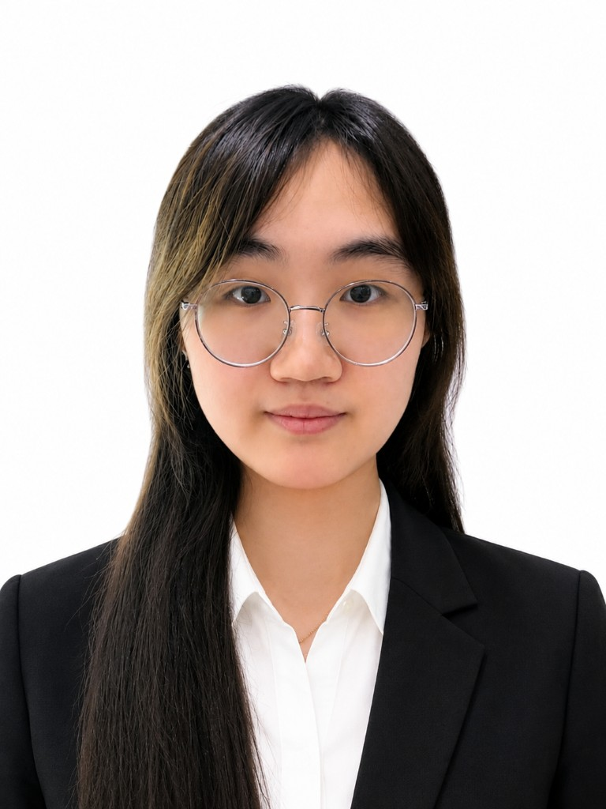

SECTION 2.0 · ABOUT ME
Personal Statement

Tan Qian Han
Final-Year Decision Science Student
About Me
I am an aspiring data analyst with a strong foundation in business mathematics and statistics. I am completing a Bachelor of Science with Honours in Decision Science at Universiti Utara Malaysia, with a current CGPA of 3.71. During my studies, I have worked on projects involving predictive modelling, financial analysis, and data visualization, including a fitness recommendation system, a pizza sales dashboard, and an electricity consumption model. I enjoy transforming complex datasets into meaningful stories that support decision-making. My strength lies in combining analytical thinking with communication skills to bridge the gap between numbers and business strategy. I am looking for a six- or twelve-month industrial placement where I can apply data analytics, programming, and problem solving.
Technical Skills
Soft Skills
Career Aspiration
I aspire to build a career in data analytics, data science or artificial intelligence, where I can transform data into meaningful insights and create technology-based solutions for real-world problems.
SECTION 3.0 · CAREER PROFILE
Resume
Education, skills, projects, and experience for a data analytics and programming role.
I am looking for a 6-month or 12-month industrial placement (3 August 2026 – 2 February 2027, or until 2 August 2027) where I can apply data analytics, programming, and problem solving while gaining hands-on industry experience.
Download resumeContact
- Email qianhant@gmail.com
- Phone +6016 9417448
- LinkedIn qian-han-tan-727122271
Education
Universiti Utara Malaysia · Oct 2023 – present
Bachelor of Science with Honours in Decision Science (Decision Mathematics and Data Analytics)
CGPA: 3.71 / 4.00
Coursework: Data Mining, Data Visualization, Operation Engineering, Business Analytics Programming, Statistics
Technical skills
Tools Tableau, Vensim, MS Access, Orange, Arena, PowerPoint, Excel, Word
Languages and frameworks Python, Visual Basic, Pandas, NumPy, Matplotlib, Streamlit, YOLO, Flask, HTML, CSS
Platforms SQL, SQLite, Visual Studio Code
Certifications
- CompTIA Security+ (2026)
- AWS Certified Cloud Practitioner (in progress)
Project experience
AI-Powered Fitness Recommendation System
Built a Python web system that recommends exercises from fitness data and visualises results with Matplotlib. Added YOLO food detection and calorie estimation for nutrition recommendations.
Pizza Sales Analytics Dashboard
Designed a Tableau dashboard for sales performance, customer trends, and product demand, to support data-driven decisions.
Electricity Consumption Prediction Model
Compared machine-learning models in Orange to predict monthly electricity use, after preprocessing, missing-value imputation, and feature analysis.
Work and activities
Office Administrator · Teletouch Communications Sdn Bhd · May 2023 – Sept 2023
Handled customer inquiries, updated records, prepared documents, and coordinated with internal teams.
Event Director · Chess Club Family Day
Planned the programme, coordinated suppliers and committees, and managed proposals and approval documents.